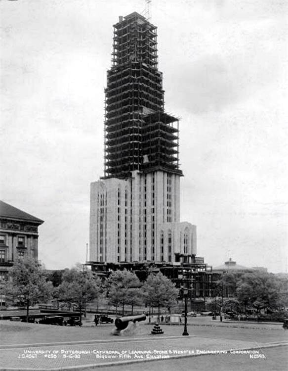
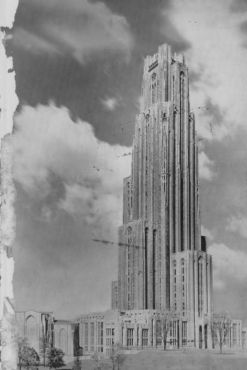

A 1939 brochure that highlights the history of the Nationality Rooms
Introduction
One of, if not the most, notable landmarks at the University of Pittsburgh is the Cathedral of Learning and its thirty one different nationality rooms, celebrating cultures all around the world with beautiful architecture. An article from the 1992 Scandinavian Journal of History claims the main challenge architects faced was “How can you present your cultural background in the form of a university classroom?” (Bjorgum) The archive that I have selected dates back to March 17, 1939. At this point in time, only five of the now thirty one nationality rooms were completed, and this document goes in detail about the rooms that were finished at the time, as well as which rooms they are working on and which rooms they are planning for the future. .
The Italian Nationlity Room
What is this document?
This document details the process of how the nationality rooms came to be and the progress that has been made since the project started in 1926. A 2020 article by Mary Springer discusses how “Before the Great Depression, Pittsburgh prioritized industry over culture,” (Springer). This makes it interesting to see how much care was put into building the Cathedral itself, let alone filling the rooms with culture from all around the world. The document provides photos and descriptions of the Swedish, German, Scottish, Russian, and Early American rooms. It also lists 13 rooms that were in progress at the time, including the Italian room, which was officially dedicated in 1949. Since 1987, twelve rooms have been added to the Cathedral, some of which have gone up to the third floor. (Pitt). Another key point the document makes is to show how the windows of the rooms show off and highlight the culture of Pittsburgh as well, and shows that while our surroundings will change, the rooms will for the most part be preserved the way they are to keep the cultures alive. .
What is the meaning of the document?
The document details the creation of the rooms in order to inform people at the time of the then new project and explain how the idea came about, what the rooms mean, and future plans for potential additions. Now, it serves an additional purpose many years later. Now, it still provides the initial history of the rooms, but that knowledge is now possessed alongside the knowledge of what the rooms have become in the present day, and the document now intends to serve as a comparison from where this idea was a century ago versus where it is now. .

The Cathedral while it was still under construction
Why is this document important?
This archive documents an important part in the University’s history and highlights how important culture was to the University and to the world as a whole even eighty five years ago. Many students at Pitt either walk past or have a class in one of these rooms everyday, and seeing this document and understanding the creative process allows for appreciation of this culture to persist into the modern day. It also provides a nice change of scenery for students taking classes in those rooms, as they differ from the stereotypical classrooms that you may find anywhere else on campus. .
What questions does this document raise?
This archive raises the question of how these rooms would look if they were thought of in the present day rather than almost a hundred years ago. If you compare the picture of the German room from the document to a present day picture of the German room from Pitt’s website, you would see that the layout and architecture of the room have not changed one bit. If that room along with the other four original rooms were made today, there is a possibility that they would have been designed differently, as cultures are always growing and changing. The document also makes students at Pitt think about all the history that existed on campus before they enrolled, and how these rooms were created long before them and will stay the same long after they graduate. The document allows for students such as myself to appreciate the history and culture of the college they go to, and maybe have more pride about where they came from themselves. .

The front cover of the 1939 brochure
Conclusion
It is important to remember events and ideas from the past, and one of the reasons for that is because those ideas can still affect us today. Keeping track of this document allows us to also keep track of the culture celebrated a century ago. Culture and history being so important to the University is encouraging to students, and these rooms will serve as symbols for many more years to come. .